Пошаговый маршрут на пяти карточках, карта действий и честный разбор оставшихся неудобств. Это описание фактической RC, а не будущего интерфейса.
12 шагов рабочего сценария
1. Загрузить тестовые данные
Работает · проверено через установленную RC в отдельном тестовом окружении
Папка в шапке → «Добавить из копии JSON» → выбрать GBP-Filler-5-cards-2-prices.json. В прежней сборке команда называется «Восстановить из копии (слияние)». Не выбирать полную замену.
В предпросмотре должно быть: 1 новая сеть, 1 шаблон, 2 пакета. Пять карточек находятся внутри сети, а не являются пятью отдельными проектами. Нажать «Применить».
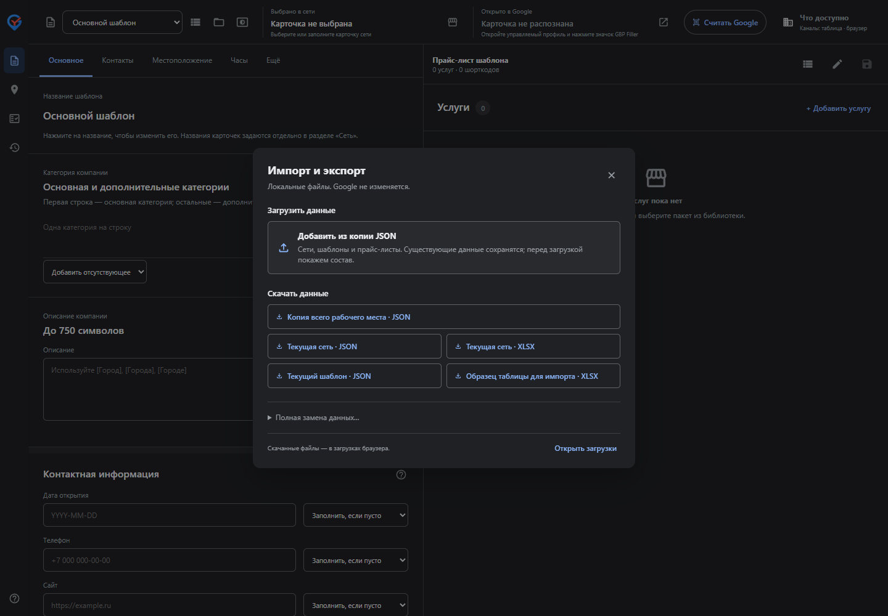
01. Загрузка добавляет данные. Полная замена скрыта в отдельном раскрываемом пункте.
02. Как выглядит подтверждение состава
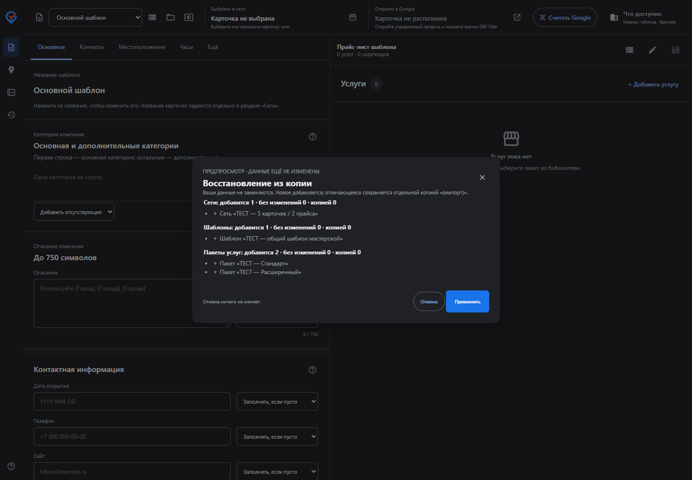
02. Отмена ещё ничего не меняет. Заголовок «Восстановление из копии» пока остаётся старым — это замечание к UX.2. Выбрать сеть и понять, что именно создано
Работает · статус Google пока не проверен
«Сеть» слева → выбрать «ТЕСТ — 5 карточек / 2 прайса» в шапке. В реестре пять строк. Нажатие по строке выбирает одну карточку для редактирования; чекбоксы задают набор для массового действия. Это разные операции.
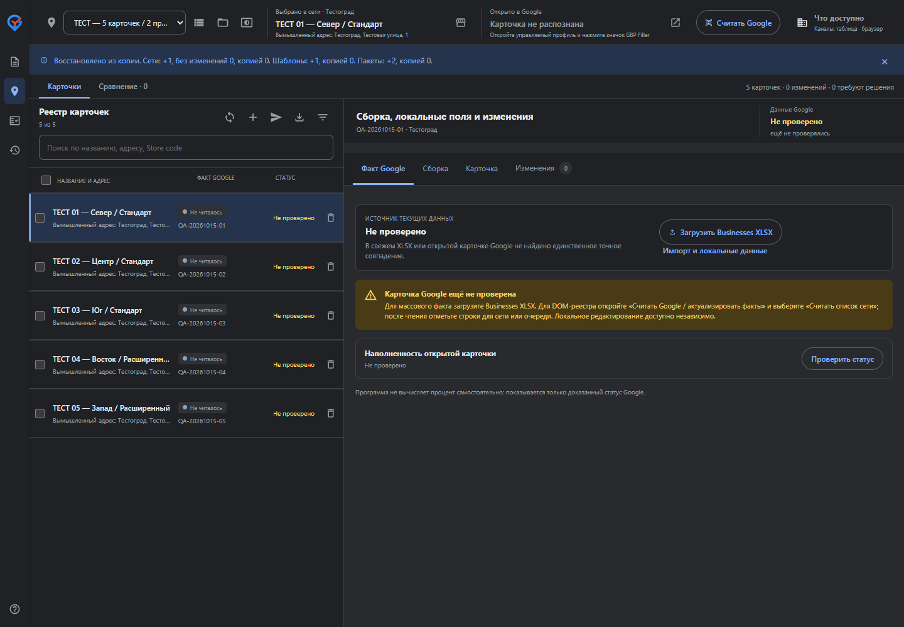
03. «Не читалось / Не проверено» относится к Google, а не к успешности локального импорта.
04. Где теперь добавление карточки и импорт
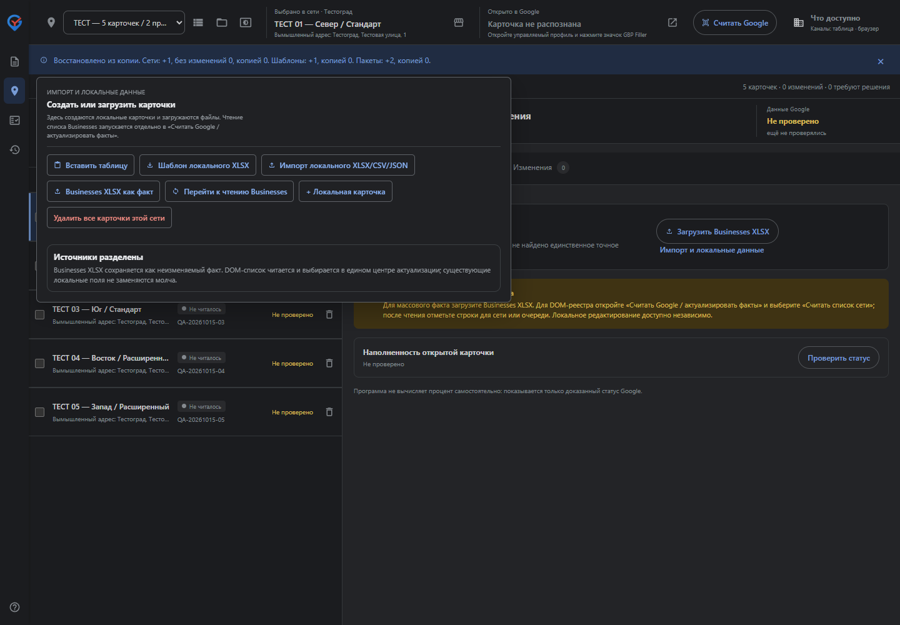
04. «+» расположен перед самолётиком. Меню пока перегружено: в нём также есть источники и удаление всей сети.3. Проверить общий шаблон
Работает · переходы по разделам исправлены
«Шаблон» слева → «ТЕСТ — общий шаблон мастерской». Здесь общие категории и описание с [Городе]. Ноль услуг справа — нормально: в этом комплекте услуги взяты из пакетов конкретных карточек, а не из собственных услуг шаблона.
«Основное / Контакты / Местоположение / Часы / Ещё» — быстрые переходы внутри длинной формы, а не пять независимых документов. Теперь переход мгновенный; «Ещё» выравнивается сверху и остаётся выбранным.
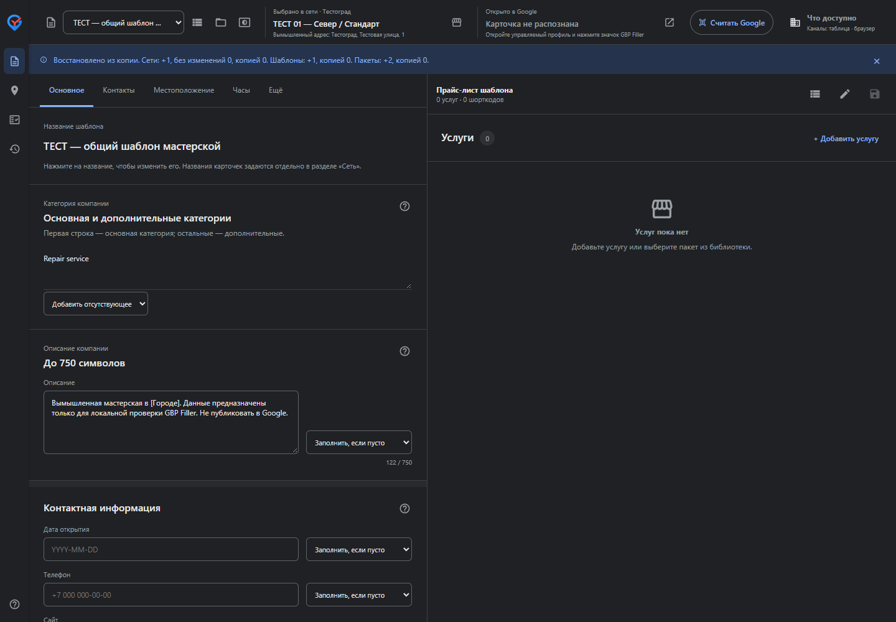
05. Общие поля и отдельная библиотека прайсов — разные сущности.
06. Исправленный переход на «Ещё»
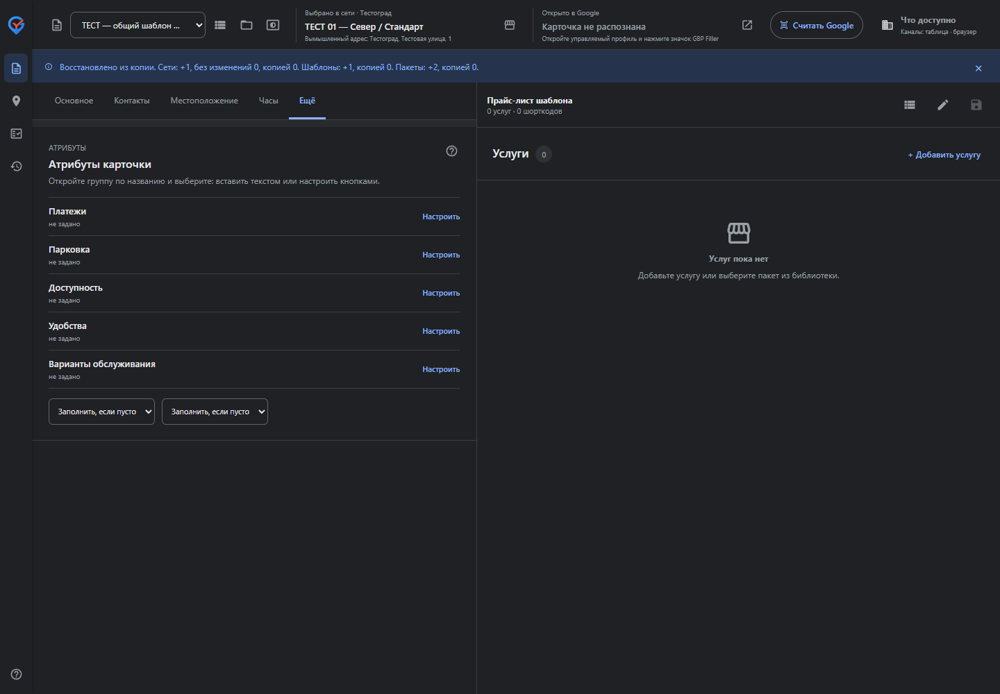
06. Короткому последнему разделу хватает высоты для нормального выравнивания; прежняя анимация отключена.4. Проверить два прайса и их связи
Работает · связь существует, но не очень заметна вне библиотеки
В шаблоне нажать значок списка над услугами справа. Должны быть «ТЕСТ — Стандарт» и «ТЕСТ — Расширенный», по пять услуг. В строках библиотеки видны связанные карточки: 01–03 и 04–05.
Для новой сети вручную: добавить услуги в редакторе шаблона, сохранить как прайс кнопкой дискеты; второй прайс создать отдельно. На карточке выбирать нужный пакет через «Сборку». Не подключать оба прайса одновременно, если нужна именно развилка 3/2.
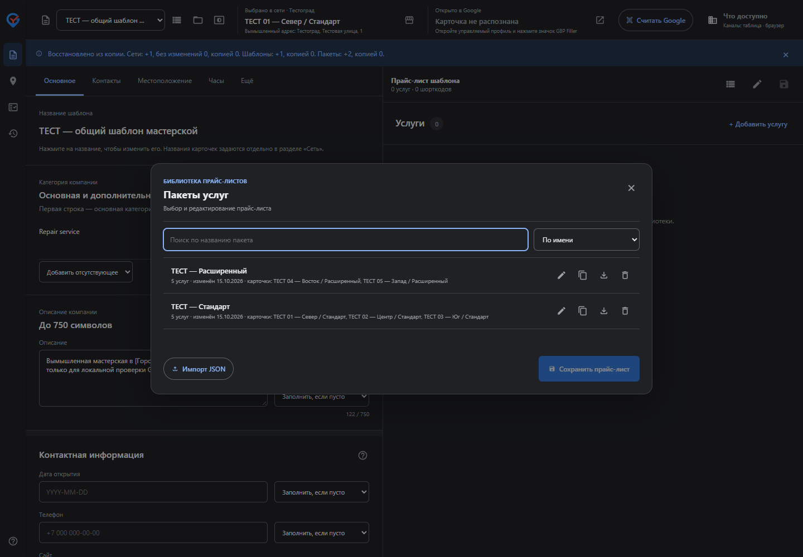
07. «Пакеты услуг» и «прайс-листы» здесь обозначают один тип объекта; разные названия — оставшееся неудобство.
5. Собрать пять карточек
Работает · массовая сборка проверена
Вернуться в «Сеть». Отметить все пять строк чекбоксом в заголовке. В появившейся полосе выбрать общий тестовый шаблон и нажать «Собрать выбранные». Подтвердить локальную сборку. Прайсы уже подключены к строкам импортом и останутся разными.
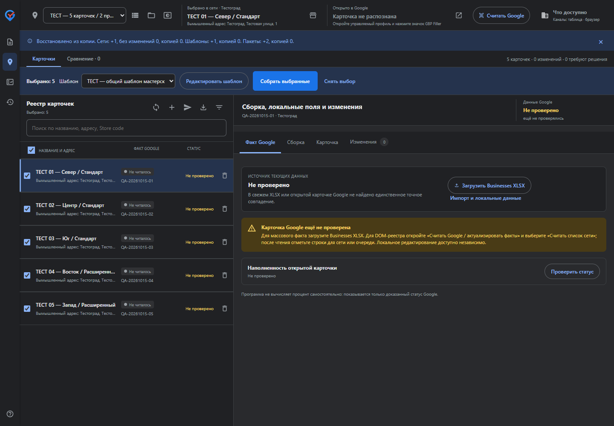
08. Выбор шаблона в этой полосе явно назначает его отмеченным карточкам. Google не меняется.
6. Сверить готовые поля и цены
Работает · оба прайса проверены в карточках
Снять массовый выбор. Выбрать первую строку → «Карточка». В описании переменная должна превратиться в «Тестограде». Открыть внутренний раздел «Услуги».
Для 01–03: диагностика 500, чистка от 900, настройка 1200 RUB, консультация без цены, бесплатная проверка 0. Для 04–05: диагностика 800, чистка от 1500, настройка 2300,50, доставка 700 RUB, консультация без цены. Ноль не равен отсутствующей цене.
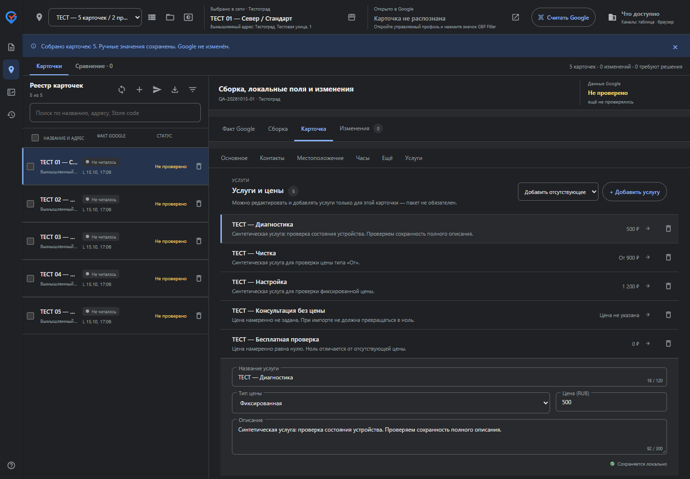
10. «Стандарт» в первой карточке. Полное описание выбранной услуги видно в редакторе ниже.
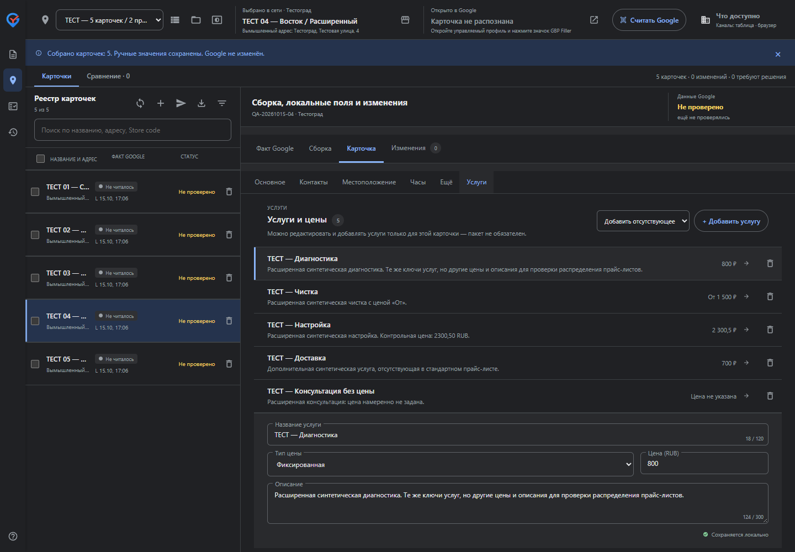
11. У четвёртой карточки другой прайс, включая дробную цену 2300,50.
09. Общие поля собранной карточки
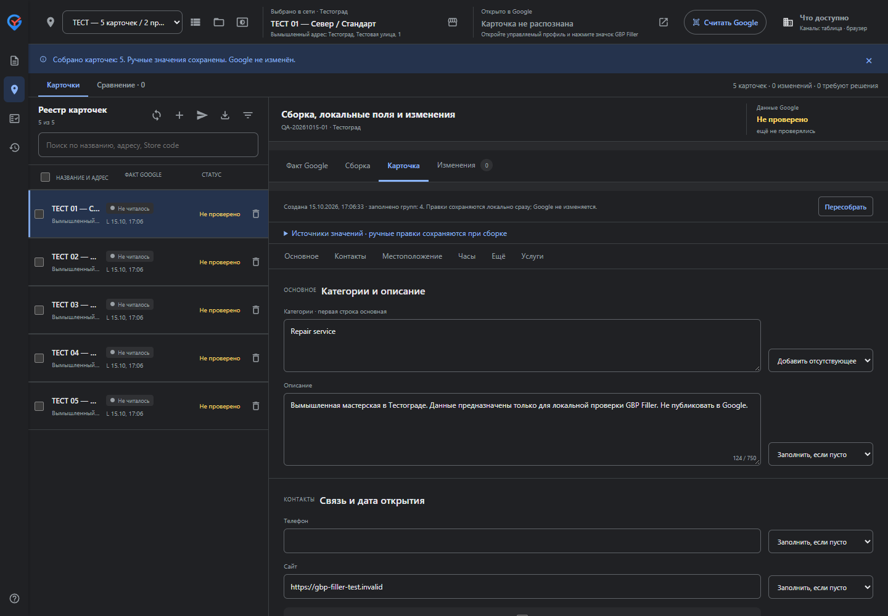
09. Поля редактируются внутри выбранной карточки; сверху отдельно показана её локальная identity.7. Сделать индивидуальную правку и пересобрать
Работает · сохранность ручного описания проверена
В первой карточке → «Основное» → изменить описание. Отдельной кнопки сохранения всей карточки нет: изменения сохраняются локально сразу. Раскрыть «Источники значений»: описание должно стать «Вручную в карточке».
«Пересобрать» ведёт в «Сборку». Там проверить шаблон и пакет → «Дополнить из сборки». Ручное описание должно остаться. Изменённые общие поля шаблона попадут в наследуемые поля только при такой сборке, не сами по себе.
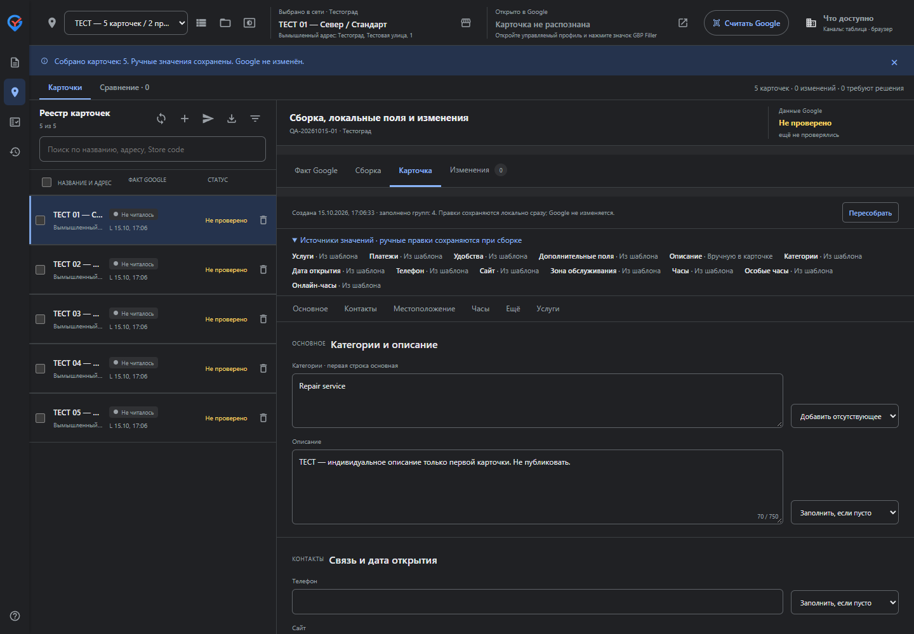
12. Ручное происхождение описания видно явно. Источник услуг пока обобщён как «Из шаблона», даже когда они пришли из пакета — это недостаточная детализация.
13. Где выбираются шаблон, прайс и повторная сборка
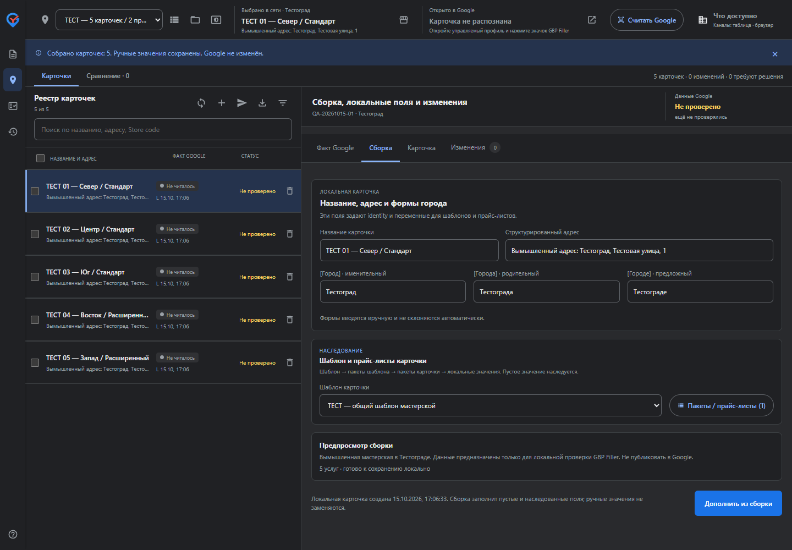
13. «Пересобрать» сначала открывает настройки; само дополнение выполняется отдельной кнопкой.8. Проверить перезапуск и журнал
Работает · проверено полным закрытием тестового браузера и повторным открытием
Закрыть и снова открыть расширение. Выбрать сеть и первую карточку; если открыт «Факт Google», перейти в «Карточку». Пять строк, прайсы и ручное описание должны сохраниться. В «Журнале» проверить импорт и сборки. Журнал не является полным версионированием каждого нажатия клавиши и не предоставляет универсальную отмену.
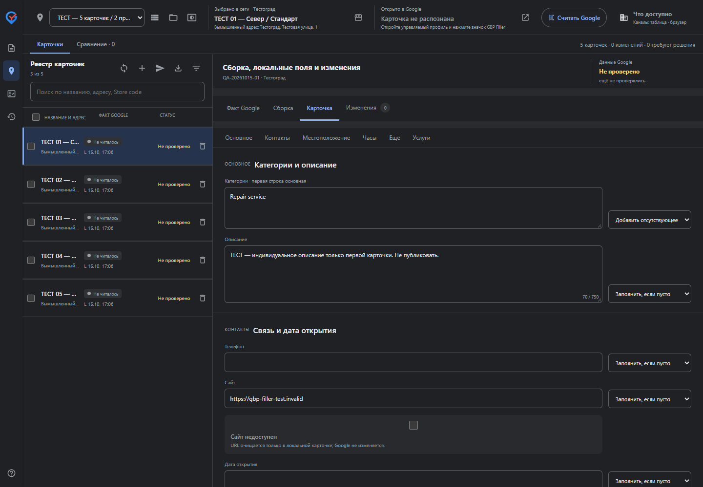
18. Данные пережили перезапуск. Возврат в конкретную внутреннюю вкладку не следует считать обязательной гарантией.
17. События в журнале
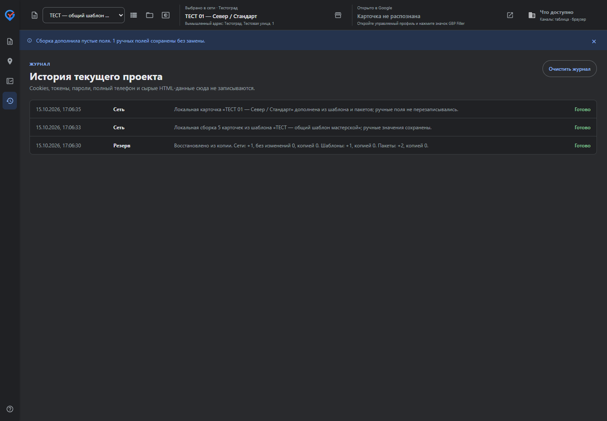
17. История текущей сети; отсутствие записи о каждом символе не означает потерю поля.9. Выбрать правильный способ чтения
Входы проверены · массовый live-обход реальных компаний этим гайдом не проверен
Считать Google в шапке: работа с текущей открытой управляемой карточкой. В контексте шаблона — прочитать и подтвердить перенос доказанных значений в шаблон; в сети — чтение / перенос в выбранную локальную строку при точном совпадении.
Круговые стрелки над реестром: «Считать список сети» получает inventory Businesses, не все описания и прайсы; «Проверить выбранные карточки» читает одну текущую открытую совпавшую карточку; «Глубокая проверка» использует сопоставленные строки в последовательной очереди. Название во множественном числе не означает параллельного чтения произвольных пяти вкладок.
Если нет однозначного сопоставления, не выбирать компанию только по похожему имени. Сверить имя, адрес и дополнительные идентификаторы; открыть точную карточку и повторить чтение. Подготовленные локальные данные при этом не нужно удалять.
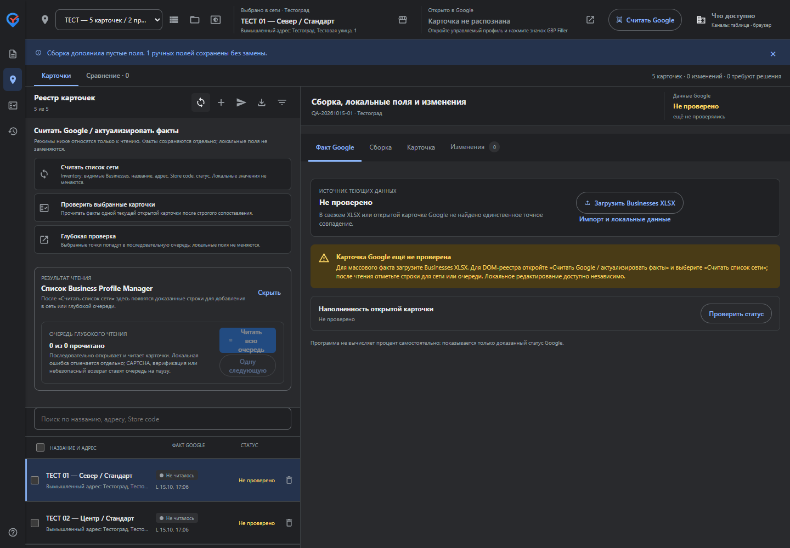
14. Раскрытая панель сильно уменьшает видимую часть реестра — это заметная UX-проблема, а не необходимое свойство чтения.
10. Использовать «Сравнение» только при наличии источника
Защитное состояние работает · назначение вкладки нуждается в уточнении
«Сравнение» рядом с «Карточками» — сводное сетевое представление маршрутов, в первую очередь опирающееся на Businesses XLSX. Это не сравнение карточек друг с другом и не доказательство, что все Google-профили совпадают с шаблоном.
Без baseline страница честно требует источник. «Нет изменений для показа» рядом с этим предупреждением нельзя читать как «всё актуально». Для одной карточки идти в «Изменения» → «Проверить и подготовить».
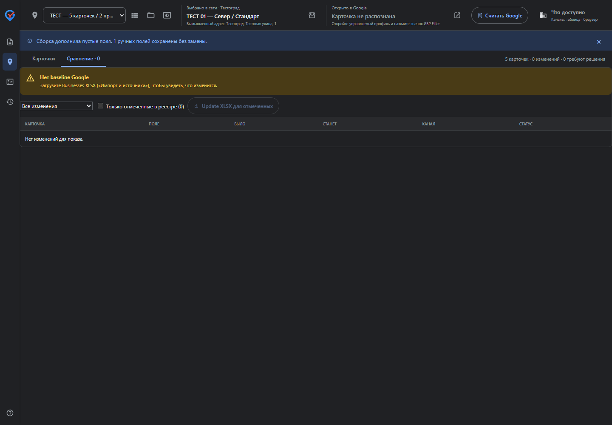
16. Техническая блокировка корректна; пустой результат и нулевой счётчик могут дать новичку ложное впечатление успешной проверки.
11. Не путать самолётик с отправкой
Preview работает · иконка обещает больше, чем действие делает
Самолётик открывает выбор «Таблицы / DOM / Гибрид». Он не сохраняет Google и не запускает заполнение всех карточек. Сейчас это выбор представления подготовленных маршрутов.
Для XLSX: получить свежую официальную выгрузку Businesses → загрузить как факт → разобрать различия → скачать допустимый Update XLSX → вручную открыть официальный Google Import и проверить его preview → после сохранения получить новую выгрузку для сверки. Описания и услуги не следует ожидать в XLSX-канале. Этот ручной официальный цикл здесь не выполнялся.
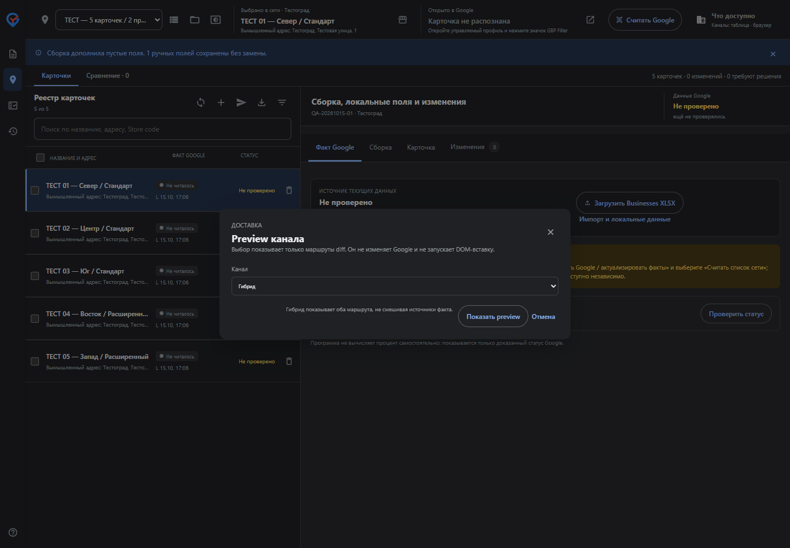
15. До подтверждённого источника и diff никакой «массовой отправки» не произошло.
12. Прочитать, разобрать конфликт и проверить доступное применение
Проверен узкий синтетический Description-пилот · Google Save и публикация не проверены
В рабочем сценарии: отдельно выбрать Google-аккаунт и группу → выбрать локальную карточку → убедиться, что в Google открыта именно она → «Изменения» → «Проверить и подготовить». В «Контроле» сверить источник, имя, адрес, полноту и старое / новое значение. Для текущего защищённого профиля на чтении и анализе остановиться. Ни «Заменить», ни Description pilot для него не запускать.
Условия этой демонстрации: Google-страница — локальная HTML-фикстура, хотя её тестовый URL выглядит как google.com. Внешняя сеть заблокирована. Для отдельного reader-примера первой тестовой карточке явно задано Test Street, 10, London, 10000 и город London. Другие непустые поля переведены в «Не менять», чтобы показать только поддерживаемую вставку Description. Остальные карточки не использовались для записи. Исходный JSON для пользователя не изменён.
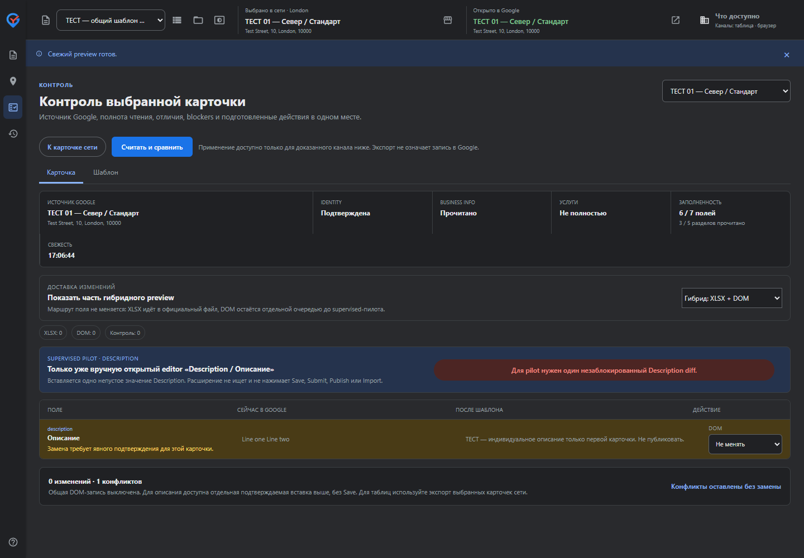
19. Один конфликт; «Не менять» не считается нулевым diff. Услуги показаны как не полностью прочитанные — этот пример не доказывает их чтение или применение.
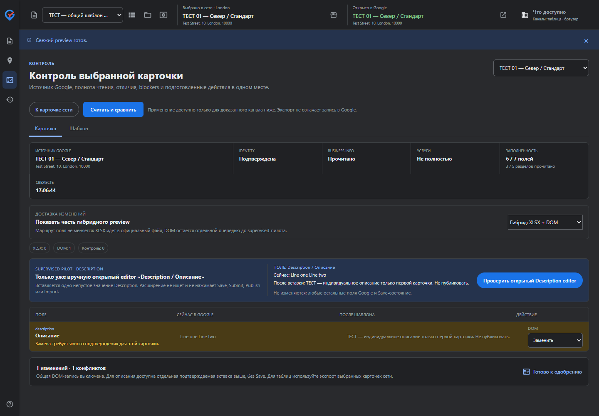
20. Выбор «Заменить» разрешает следующий шаг пилота, но ещё не вставляет и не сохраняет текст.
Для доступного Description-пилота вручную открыть редактор описания Google → «Проверить открытый Description editor» → сверить старое / новое → «Я подтверждаю вставку Description» → «Вставить Description без Save». Статус matched доказывает совпадение текста в поле, а не публикацию. В реальном Google решение о Save остаётся за оператором; после него нужно повторное чтение.
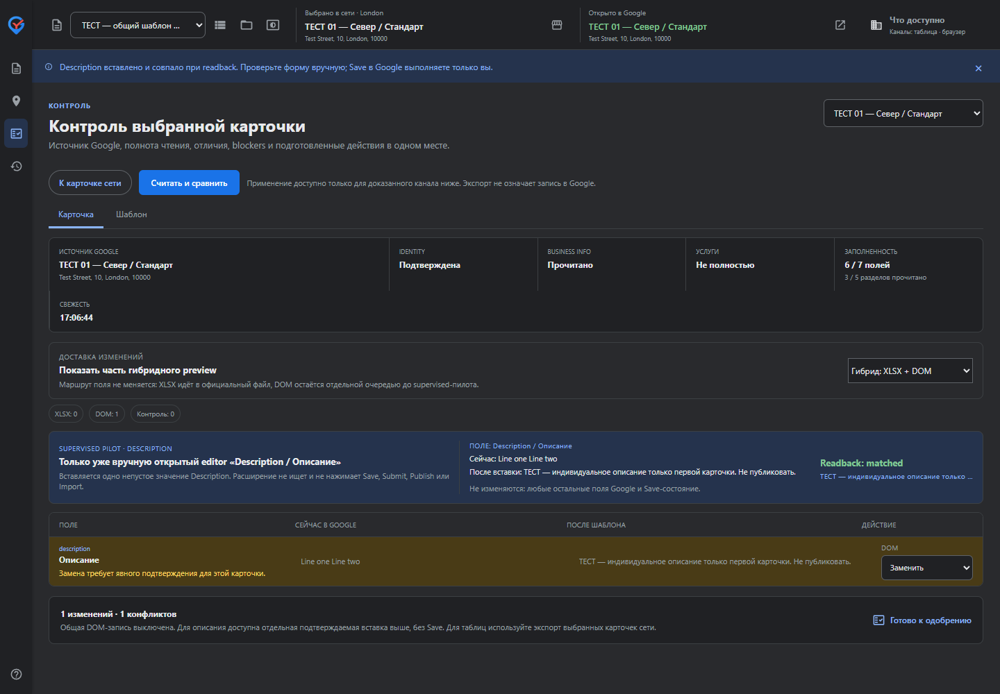
21. Проверены вставка и readback. Общая DOM-запись всей сети этой RC не подтверждена.
Дополнительный стоп-сценарий: вымышленный город нельзя подтвердить как реальный
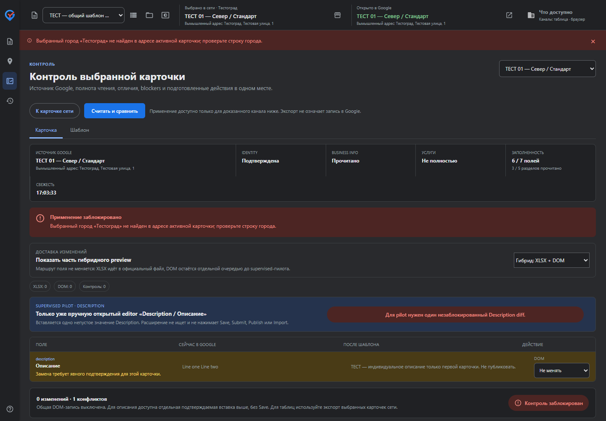
19a. Это отдельная попытка в той же съёмке. «Тестоград» подходит для локальных данных, но не для положительного сценария проверки реального города. Защиту не ослабляли: для положительного примера взяли штатную London-фикстуру.Граница доказанного
Проверено в этой съёмке: реальная установленная MV3 RC в отдельном одноразовом профиле; UI-импорт исходного JSON; пять карточек; два пакета; общая сборка; подстановка города; разные цены и описания; ручное описание и пересборка; полный перезапуск; просмотр журнала; входы чтения / сравнения / доставки; синтетический read → diff → выбор конфликта → preflight → подтверждение → вставка Description → matched readback без Save.
Не проверено: ваш установленный экземпляр Chrome; реальная запись Google и результат после Google Save; публикация компаний; массовое сохранение полей и услуг; все комбинации языков и Google-аккаунтов; официальный ручной Import/Verify XLSX. Снимки в этом документе не являются доказательством этих возможностей.
Исправлено этим проходом: убрана конкурирующая smooth-анимация; координаты переходов считаются внутри нужной формы; «Ещё» получает место для выравнивания; ручная прокрутка корректно обновляет подсветку. Лаг на очень больших реальных шаблонах отдельно не профилировался.
Как обновлять: если ваша RC загружена из той же папки «Текущая версия / GBP Filler — расширение», перезагрузить именно её в chrome://extensions и заново открыть окно редактора. Если путь неизвестен — сначала сверить его, не удалять расширение и не загружать ZIP как вторую копию: у другого пути может оказаться отдельное локальное хранилище.
Следующая совместная проверка
Начать с шага 5: в уже импортированной тестовой сети отметить пять строк и собрать их из общего шаблона. После этого сверить «Стандарт» у первой и «Расширенный» у четвёртой. Не переходить к реальной Google-записи, пока локальные этапы не понятны и не проверены вами.
Источники и воспроизведение
Снимки отражают синтетический прогон 15.10.2026; ограничение защищённого профиля и групп уточнено 16.10.2026. Исходники ниже находятся в рабочем дереве проекта, а не в ZIP/установленном расширении.
Скриншоты 01–21 сняты скриптом scripts/capture-network-guide.mjs в текущем проходе; 19a — отдельная стоп-попытка того же прохода. Каждый использованный кадр просмотрен. Исходный набор: test-data/GBP-Filler-5-cards-2-prices.json в корне рабочего workspace.
Фактическая логика: src/main.tsx, src/workspaceBackup.ts, src/servicePacks.ts, src/importer.ts, src/domain.ts. Проверки переходов: tests/e2e/editor.spec.ts; сохранности установленного расширения: tests/e2e/installed-extension.spec.ts. Старые PRD/handoff не использованы как доказательство готовности UI.